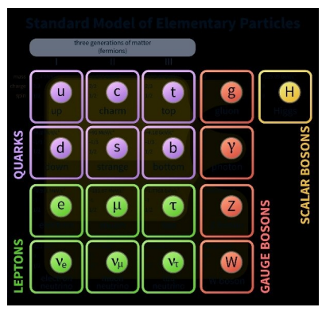
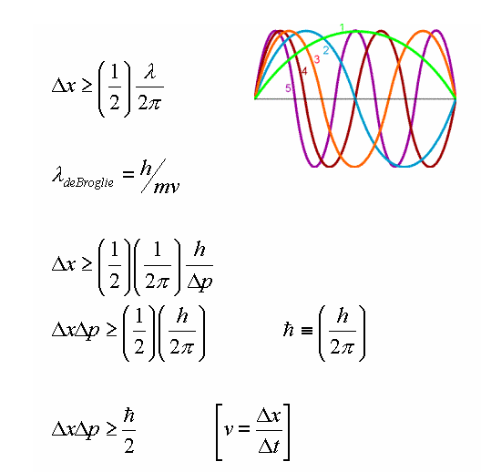
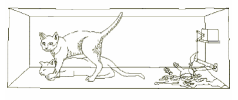

Física para Ingeniería
En inicios de 1900 ya se habían observado fenómenos físicos que no se podrían explicar mediante las leyes de la física clásica. Como La luz, hasta entonces se consideraba un fenómeno ondulatorio, exhibía propiedades de partícula según se fue descubriendo.
Los conceptos que Newton tenia de masa, la longitud y el tiempo absolutos, se empezaron a tener por inadecuados para ciertos fenómenos físicos. La luz que se producía por una chispa eléctrica en el seno de un gas no originaba un espectro continuo al pasar por un prisma o por una rejilla de difracción. Éstos y otros fenómenos dieron lugar a formas completamente nuevas de contemplar el mundo que nos rodea lo que es la física moderna.
Einstein publicó En 1905 su primer trabajo de acerca de la relatividad, y en 1916 un segundo trabajo. Su primer trabajo sentó las bases para una física universal que limitó la física newtoniana clásica, en situaciones con velocidades menores que la de la luz. El trabajo de Einstein impulso investigaciones de otros científicos que tuvieron amplias ramificaciones; al mismo tiempo, estableció parámetros para usar la energía al máximo, viajes espaciales, para la electrónica moderna, análisis químico, rayos X y las armas nucleares, etc.
Tippens, P. E. (2011). Física, conceptos y aplicaciones (7.ª ed., p. 731 y 732). México: MC GRAW HILL. México: MC GRAW HILL.
Fotografía © Betmann/ Corbis.
Es una rama de la física que trata de las propiedades, las relaciones e interacciones de las partículas subatómicas fundamentales de la materia. La Partícula es una entidad material de tamaño pequeño. En física de partículas, se entiende como una entidad de escala subatómica.
Cobián, J. (n.d.). EL MODELO ESTANDAR DE LA FÍSICA DE PARTÍCULAS. Sne.Es. Retrieved April 13,2024,fromhttps://www.sne.es/wpcontent/uploads/2020/03/NT_0118_Fisica_de_particulas.pdf
Física cuántica es la rama de la física que estudia los fenómenos a escalas atómicas, donde las leyes de la mecánica clásica dejan de cumplirse. La física cuántica explica fenómenos que no pueden ser explicados por la física de toda la vida, la de Newton. La física cuántica también explica que la luz es una onda y también es una partícula y pueden ser dos cosas a la vez.
González Burón, H., Santaolalla, J., & Marimon Garrido, O. (2018). Cómo explicar física cuántica con un gato zombi (3.ª ed., p. 11 y 32). Un_Tal_Lucas. Un_Tal_Lucas
La teoría especial de la relatividad, que se publicó en 1905, se basa en dos postulados. El primero establece que cada objeto está en movimiento en relación con algo, que no existe el reposo absoluto. El primer postulado de Einstein también establece que, si vemos que algo cambia de posición respecto a nosotros, no tenemos forma de saber si ese algo se mueve o somos nosotros los que lo hacemos.
Primer postulado: Las leyes de la física son las mismas para todos los marcos de referencia que se muevan a una velocidad constante unos respecto de otros.
En el siglo XIX los físicos sugirieron que existía un marco de referencia, el luminoso éter, que era considerado el medio por el que se creía que se propagaban las ondas electromagnéticas. Sin embargo, fueron incapaces de demostrar la existencia del éter. Estos experimentos son la base del segundo postulado revolucionario de Einstein:
La velocidad de la luz en el vacío (c) es constante para todos los observadores, independientemente de su estado de movimiento.
La luz siempre se propaga a la misma rapidez constante:
c = 3 x10^8 m/s sin importar que viaje en favor o en contra de la fuente.
Tippens, P. E. (2011). Física, conceptos y aplicaciones (7.ª ed., p. 733). México: MC GRAW HILL. México: MC GRAW HILL.
Son una partícula con un tamaño inferior al tamaño de un átomo. La Partícula subatómica elemental es una partícula que hasta la fecha no se ha demostrado tenga partes. El protón y neutrón no cuentan como partículas subatómicas elementales, pero el electrón, el fotón, el neutrino, o el gluón sí.
Los Bosones son partículas con espín entero que transmiten fuerzas. Fermiones son partículas con espín semi entero que constituyen la materia. Los Hadrones son partículas que interactúan bajo la fuerza nuclear fuerte o fuerza de color. Hay dos tipos de hadrones, los bariones y los mesones y por ultimo los Leptones que son partículas que no interactúan bajo la fuerza nuclear fuerte. Son los electrones, muones, y tauones, con sus neutrinos asociados Las partículas subatómicas comunes del átomo son tres (protón, neutrón y electrón), y habitualmente se etiquetan con tras magnitudes numéricas llamadas masa, carga eléctrica y espín (una especie de giro interno), aunque tienen otras propiedades como el isoespín, y otra serie de cargas como en número bariónico.
Las primeras 3 propiedades de estas 3 partículas:
El protón: masa mp = 1.673 · 10−27kg, carga eléctrica qp = +e = +1, 6 · 10−19C, espín s = ± 1 2
El neutrón: masa mn = 1.675 · 10−27kg, carga eléctrica nula qn = 0C, espín s = ± 1 2 ~.
El neutrón tiene casi la misma masa que el protón, pero es ligeramente más masivo, lo que tiene consecuencias importantes físicas.
El electrón: masa me = 9.11 · 10−31kg, carga eléctrica qe = −e = −1.6 · 10−19C, espín s = ± 1 2 ~. El electrón es unas 1836 (6π 5) veces más ligero que el protón.
(N.d.).Academia.edu.Retrieved April 14, 2024, from https://www.academia.edu/76356185/Teor%C3%ADa_at%C3%B3mica_y_part%C3%ADculas_subat%C3%B3micas_Conceptos_complementarios_JFGH
El principio de incertidumbre de Heisenberg surge de su modelo de átomo, que rechaza la idea de describirlo como una combinación de partículas y ondas. Heisenberg prefería representar los niveles de energía de los electrones en términos numéricos puros, utilizando una herramienta matemática llamada "matriz", lo que dio lugar a la "mecánica de matriz". Este enfoque le valió el Premio Nobel en 1932.
El problema fundamental que abordó Heisenberg fue cómo determinar la posición de una partícula, como un electrón. La respuesta lógica sería observarlo, pero cualquier intento de observación, como con un microscopio, perturbaría la posición del electrón debido a su pequeño tamaño. Esto lleva al dilema de que cualquier medición realizada tiene un efecto significativo en el objeto medido, afectando su posición y, posiblemente, su movimiento y velocidad.
Heisenberg demostró que no nos será posible idear un método para localizar la posición de la partícula subatómica mientras no estemos dispuestos a aceptar la incertidumbre absoluta respecto a su posición exacta. Es un imposible calcular ambos datos con exactitud al mismo tiempo.
El principio de incertidumbre de Heisenberg plantea que incluso en el cero absoluto, donde la energía y el movimiento de las partículas se reducen al mínimo, persiste una energía residual del punto cero que mantiene las partículas en movimiento y genera incertidumbre. Einstein intentó refutar este principio al demostrar que la incertidumbre en la medición de energía también implica incertidumbre en el tiempo de medición, pero Bohr demostró que esta refutación era incorrecta. Así, el principio de incertidumbre revela la complejidad del Universo, pero no lo hace irracional.
Tippens, P. E. (2011). Física, conceptos y aplicaciones (7.ª ed., p.). México: MC GRAW HILL. México: MC GRAW HILL.
Se hace referencia a paradoja de un célebre experimento imaginario que fue propuesto por Erwin Schrödinger en 1937 con el fin de ilustrar las diferencias entre interacción y medida en el campo de la mecánica cuántica.
El experimento consiste en imaginar a un gato metido dentro de una caja que también contiene un dispositivo peligroso. Este dispositivo es una botella de vidrio con un veneno muy volátil y un martillo sujeto sobre la botella por lo que si cae sobre ella la rompe y se escapa el veneno y el gato moriría. El martillo está conectado a un mecanismo detector de partículas alfa; si llega una partícula alfa el martillo cae rompiendo la botella con lo que el gato muere, por el contrario, si no llega no ocurre nada y el gato continua vivo.
Cuando el dispositivo está completamente preparado, se procede a llevar a cabo el experimento. Junto al detector se coloca un átomo radiactivo con ciertas características específicas: tiene una probabilidad del 50% de emitir una partícula alfa en una hora. Al finalizar esa hora, se habrá producido uno de los dos posibles eventos: el átomo habrá emitido una partícula alfa o no lo habrá hecho (ambos eventos tienen la misma probabilidad de ocurrir). Como consecuencia de esta interacción, dentro de la caja, el gato estará vivo o muerto. Sin embargo, no podemos determinarlo hasta que no la abramos y lo verifiquemos.
cuántica y relatividad (5.ª ed., p. 32, 33). (2004). (5.ª ed.). México: UPV/EHU, Leioa. México: UPV/EHU, Leioa.